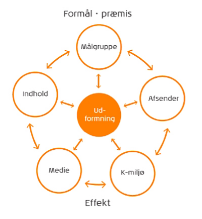

Produktionsmodeller

Den nye bollemodel
Denne model lavet af Bruno Ingeman, og handler basalt om at udtænke og beskrive en kommunikationsplan for et medie.
Bollemodellen bruges til at se de forhold, man skal tage hensyn til, når man skal lave kommunikation.
Modellen har 6 boller der mellem sig har dobbeltvendte pil, der er med til at skabe en dynamisk model.
Indholdet
Det basale indhold kommunikationen består af.
Målgruppen
Her opsætter man en målgruppe, så man er sikker på at kunne ramme de mennesker man har i tankerne.
Afsender
Person eller som organisation, man skal være sikker på hvem det er man represæntere, når man viser sine produkter frem.
Mediet
Dette er som regel valgt på forhånd, men kan ændres hvis det vil passe bedre ind i modellen.
Kommunikationen
K-miljø = kommunikations miljø, hvor ser man din kommunikation henne? Er det en brochure du ser ved busstoppestedet, eller på storskærmen i biografen?.
Udformningen
Her organiserer man alle delelementerne man har indsamlet gennem alle bollerne. Efter dette kan man laven en rough, hvilket er en grovskitse, der med udgangspunkt i elementerne, kan give en et overblik over sit produkt.
Kilder;
Den nye bollemodel Figur 8.2 side 124. Busch, Anne mette. 2015. "Kommunikation i multimediedesign."